Soru 1Cevap: E
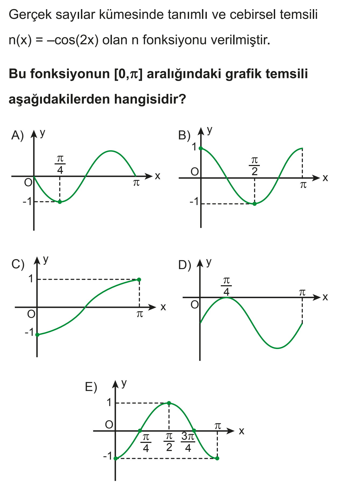
Çözüm
- $n(0) = -\cos0 = -1$, $n\left(\frac{\pi}{2}\right) = -\cos\pi = 1$, $n(\pi) = -1$.
- $n\left(\frac{\pi}{4}\right) = 0$, $n\left(\frac{3\pi}{4}\right) = 0$; periyot $\pi$.
- $-1$'den başlayıp $\frac{\pi}{2}$'de 1'e çıkan, $\pi$'de $-1$'e inen grafik E.
Cevap: E
Soru 2Cevap: B
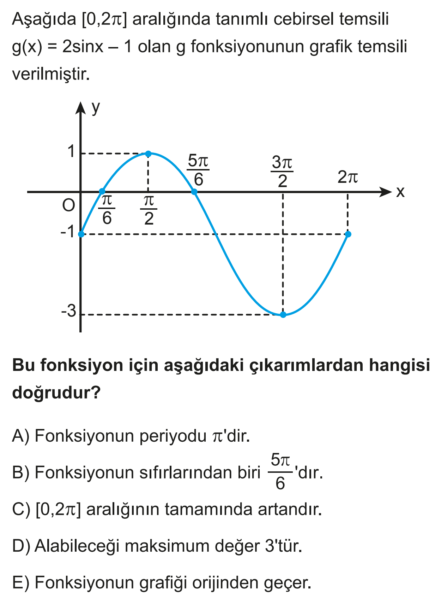
Çözüm
- Periyot $2\pi$ (A yanlış); maksimum $2 - 1 = 1$ (D yanlış); $g(0) = -1$ (E yanlış).
- $g(x) = 0$ ⇔ $\sin x = \frac12$ ⇔ $x = \frac{\pi}{6}$ ya da $\frac{5\pi}{6}$.
- Sıfırlardan biri $\frac{5\pi}{6}$ → B.
Cevap: B
Soru 3Cevap: A
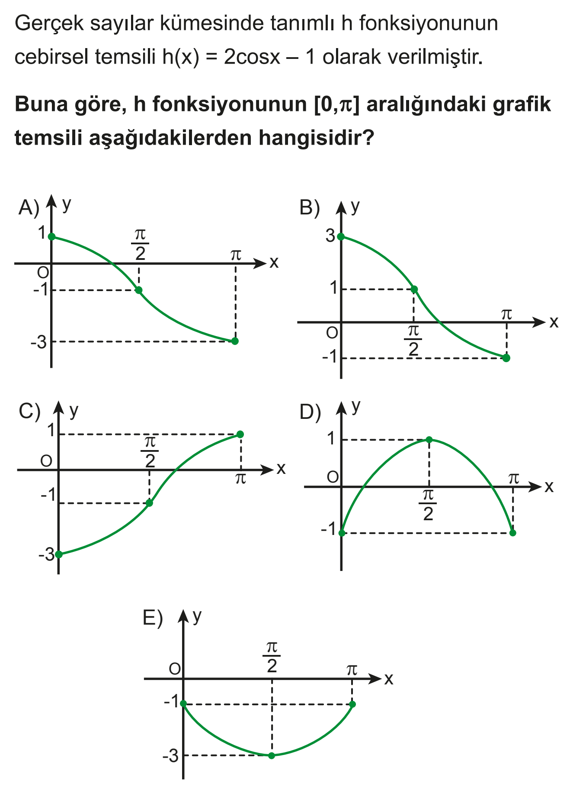
Çözüm
- $h(0) = 2 - 1 = 1$.
- $h\left(\frac{\pi}{2}\right) = -1$, $h(\pi) = -2 - 1 = -3$.
- 1'den $-3$'e azalan grafik A.
Cevap: A
Soru 4Cevap: B
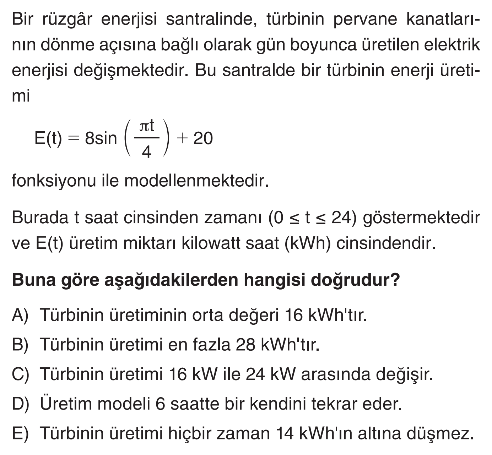
Çözüm
- $-8 \le 8\sin\frac{\pi t}{4} \le 8$ → $12 \le E(t) \le 28$.
- Orta değer 20, periyot $\frac{2\pi}{\pi/4} = 8$ saat.
- Doğru ifade: en fazla 28 kWh.
Cevap: B
Soru 5Cevap: A
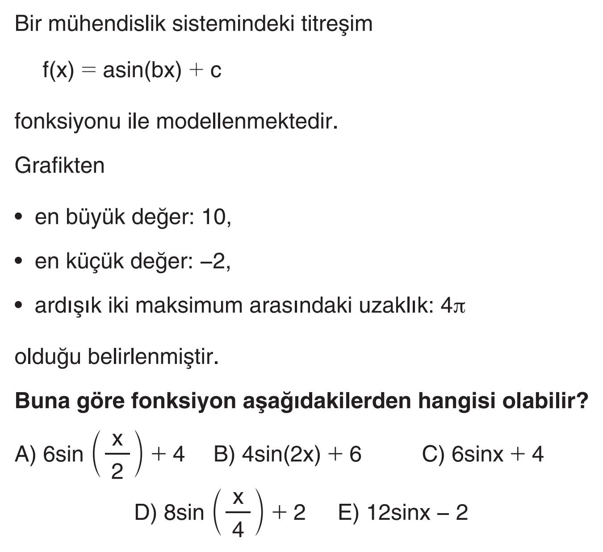
Çözüm
- $a = \frac{10-(-2)}{2} = 6$, $c = \frac{10+(-2)}{2} = 4$.
- Ardışık iki maksimum arası periyottur: $\frac{2\pi}{b} = 4\pi$ → $b = \frac12$.
- $f(x) = 6\sin\frac{x}{2} + 4$.
Cevap: A
Soru 6Cevap: D
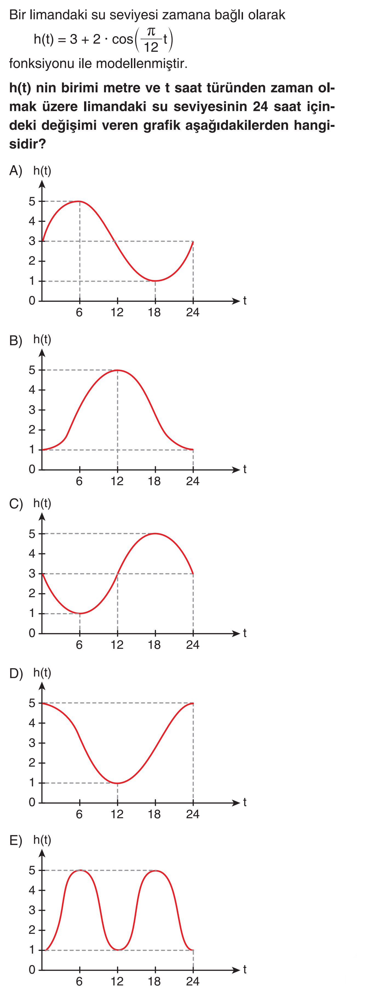
Çözüm
- $h(0) = 3 + 2 = 5$ (maksimum).
- $h(12) = 3 + 2\cos\pi = 1$ (minimum), $h(24) = 5$; periyot 24 saat.
- 5'ten başlayıp 12'de 1'e inen, 24'te 5'e dönen grafik D.
Cevap: D
Soru 7Cevap: B
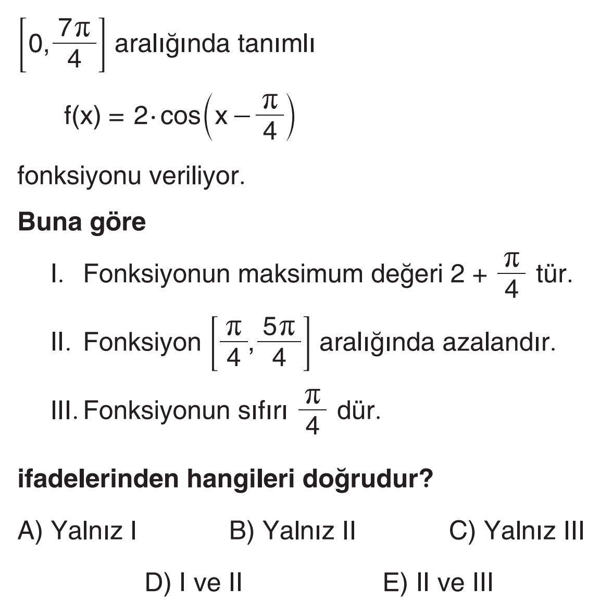
Çözüm
- I: maksimum değer 2'dir ✗.
- II: $x\in\left[\frac{\pi}{4},\frac{5\pi}{4}\right]$ ise $x - \frac{\pi}{4}\in[0,\pi]$; kosinüs burada azalan ✓.
- III: $x - \frac{\pi}{4} = \frac{\pi}{2}$ → sıfır $\frac{3\pi}{4}$ ✗. Yalnız II.
Cevap: B
Soru 8Cevap: E
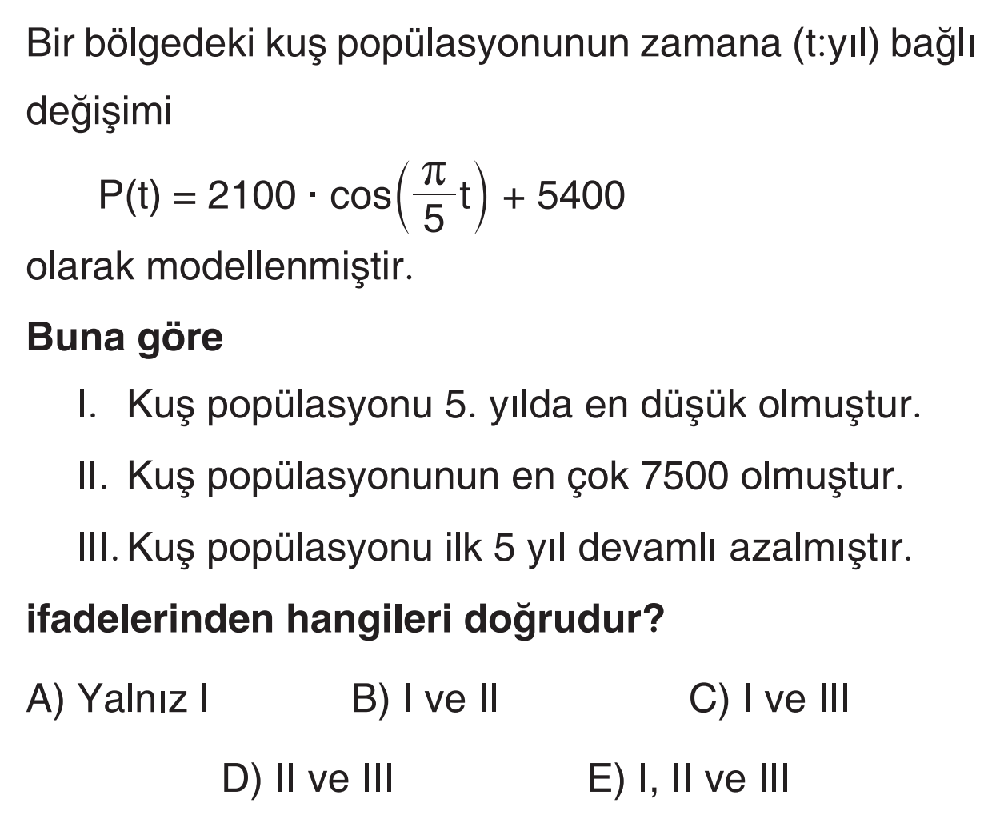
Çözüm
- $t = 5$: $\cos\pi = -1$ → en düşük $5400 - 2100 = 3300$ ✓ (I).
- En çok $2100 + 5400 = 7500$ ✓ (II).
- $t\in[0,5]$'te $\frac{\pi t}{5}\in[0,\pi]$; kosinüs azalan ✓ (III).
Cevap: E
Soru 9Cevap: A
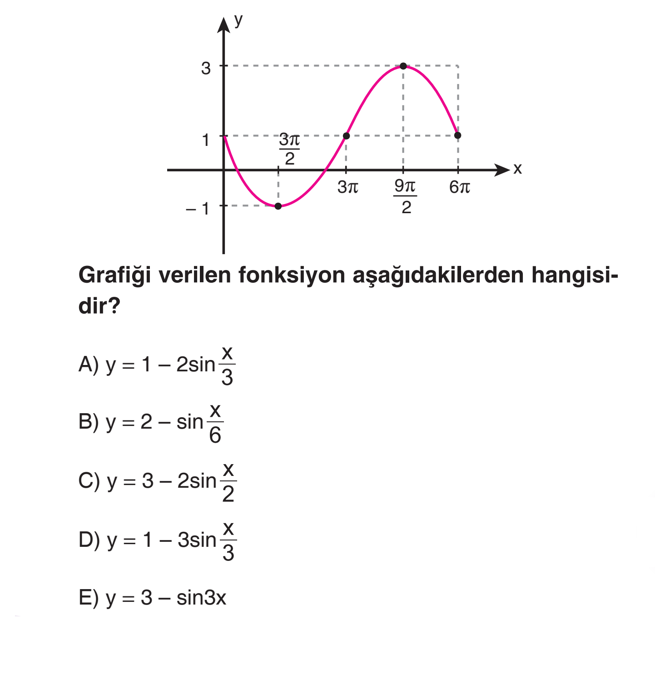
Çözüm
- $y(0) = 1$ → orta değer 1; maksimum 3, minimum $-1$ → genlik 2.
- Önce iner → $1 - 2\sin(\dots)$; minimum $\frac{3\pi}{2}$'de: $\sin\frac{x}{3} = 1$ için $x = \frac{3\pi}{2}$ ✓.
- $y = 1 - 2\sin\frac{x}{3}$; $x = \frac{9\pi}{2}$'de $1 + 2 = 3$ ✓.
Cevap: A
Soru 10Cevap: C
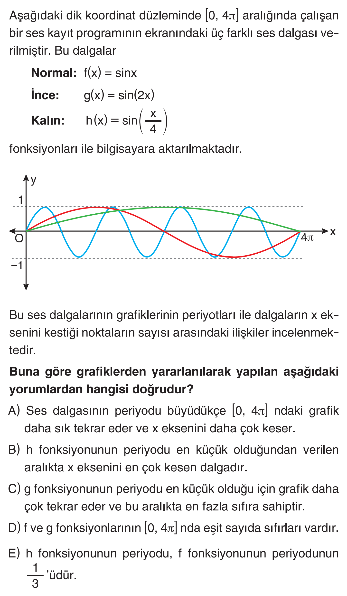
Çözüm
- Periyotlar: $f$ için $2\pi$, $g$ için $\pi$, $h$ için $8\pi$.
- $[0,4\pi]$'de sıfır sayıları: $g$ 9, $f$ 5, $h$ 2.
- Periyodu en küçük $g$ en sık tekrar eder ve en çok sıfıra sahiptir → C.
Cevap: C
Soru 11Cevap: B
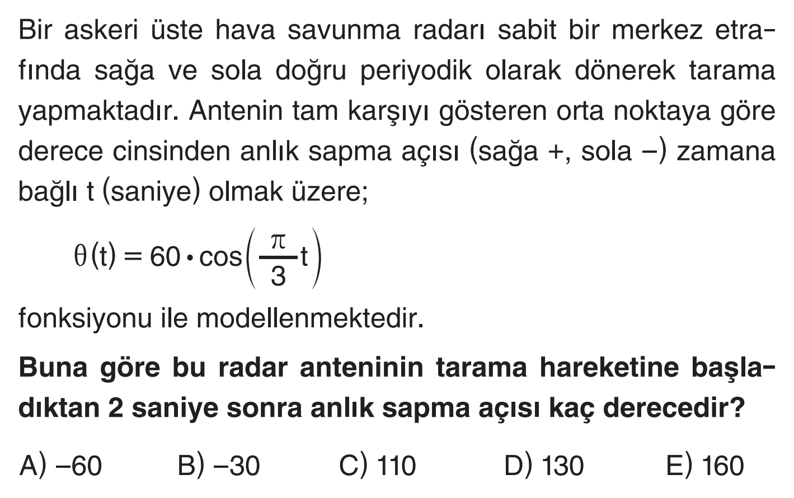
Çözüm
- $\theta(2) = 60\cos\frac{2\pi}{3}$.
- $\cos\frac{2\pi}{3} = -\frac12$.
- $\theta(2) = -30^\circ$.
Cevap: B
Soru 12Cevap: E
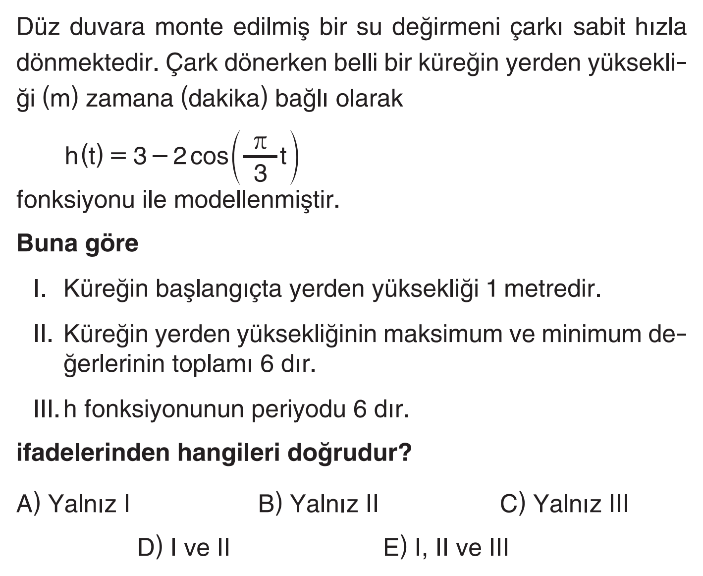
Çözüm
- $h(0) = 3 - 2 = 1$ ✓ (I).
- $1 \le h \le 5$ → toplam 6 ✓ (II).
- Periyot $\frac{2\pi}{\pi/3} = 6$ ✓ (III). I, II ve III.
Cevap: E
Soru 13Cevap: B
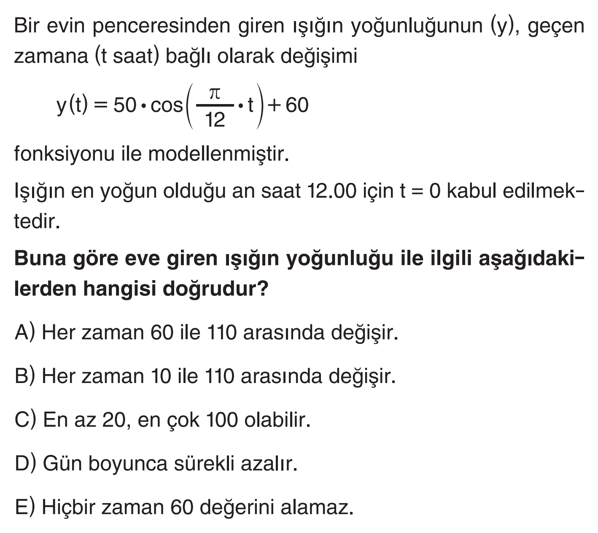
Çözüm
- $-1 \le \cos\left(\frac{\pi t}{12}\right) \le 1$.
- $-50 + 60 \le y \le 50 + 60$.
- Yoğunluk 10 ile 110 arasında değişir.
Cevap: B
Soru 14Cevap: A
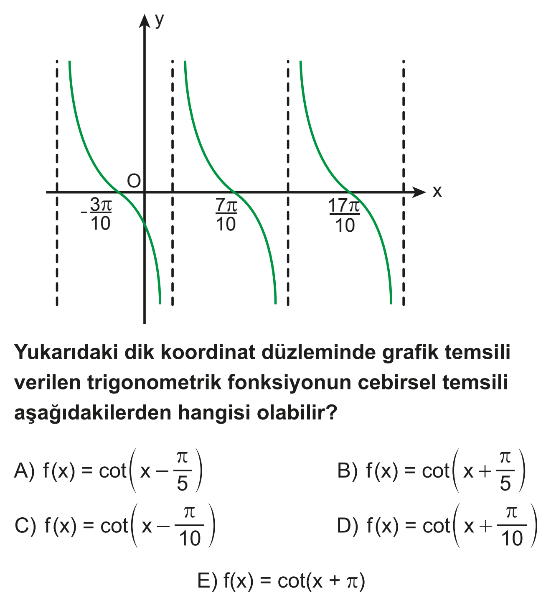
Çözüm
- Grafik $x = -\frac{3\pi}{10}$ ve $\frac{7\pi}{10}$'da x eksenini keser; azalan → kotanjant.
- $\cot(x + c) = 0$ ⇔ $x + c = \frac{\pi}{2} + k\pi$.
- $c = -\frac{\pi}{5}$: $x = \frac{7\pi}{10}$ ✓, $-\frac{3\pi}{10}$ ✓ → $\cot\left(x - \frac{\pi}{5}\right)$.
Cevap: A
Soru 15Cevap: D
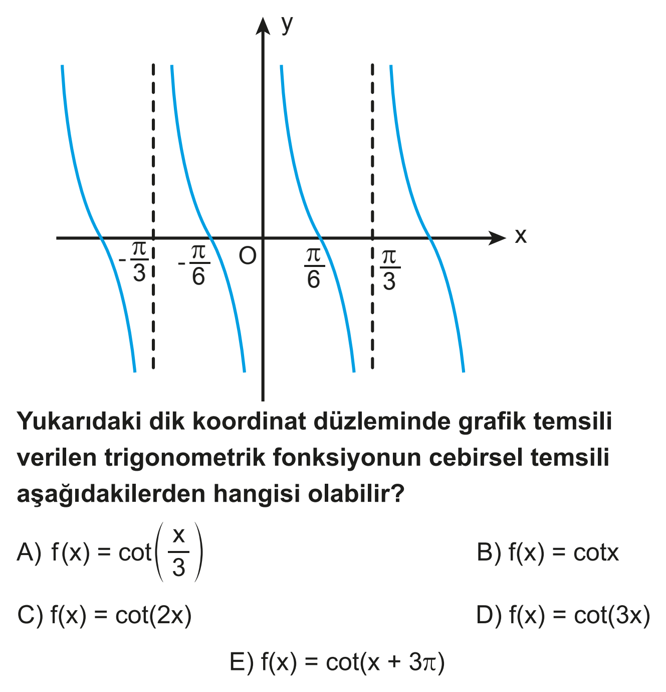
Çözüm
- Asimptotlar $0, \pm\frac{\pi}{3}$ → periyot $\frac{\pi}{3}$.
- $\cot(ax)$'in periyodu $\frac{\pi}{a}$ → $a = 3$.
- Kontrol: $\cot(3\cdot\frac{\pi}{6}) = 0$ ✓ → $f(x) = \cot3x$.
Cevap: D
Soru 16Cevap: E
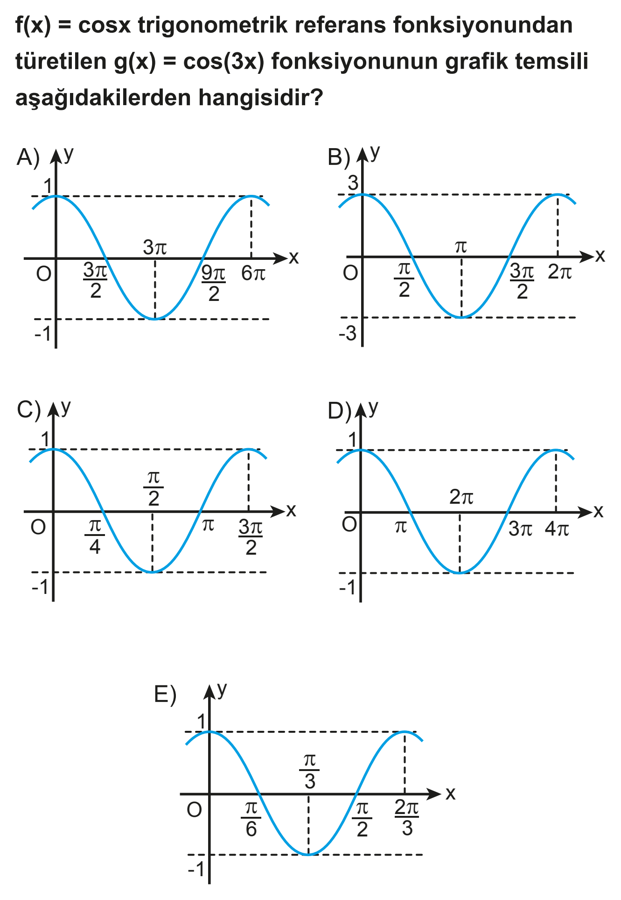
Çözüm
- $\cos3x$'in periyodu $\frac{2\pi}{3}$.
- $g(0) = 1$, ilk minimum $3x = \pi$ → $x = \frac{\pi}{3}$.
- Sıfırlar $\frac{\pi}{6}, \frac{\pi}{2}$: grafik E.
Cevap: E
Soru 17Cevap: C
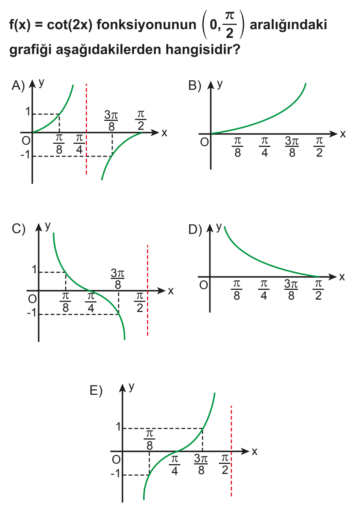
Çözüm
- $\cot2x$, $(0,\frac{\pi}{2})$'de $+\infty$'dan $-\infty$'a azalır.
- $\cot\left(2\cdot\frac{\pi}{8}\right) = 1$, $\cot\left(2\cdot\frac{\pi}{4}\right) = 0$, $\cot\left(2\cdot\frac{3\pi}{8}\right) = -1$.
- Bu noktalardan geçen azalan grafik C.
Cevap: C
Soru 18Cevap: D
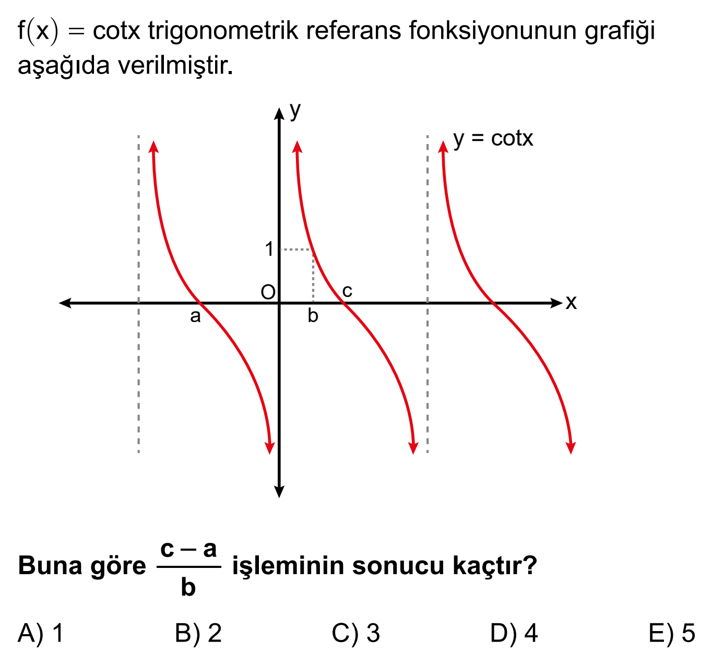
Çözüm
- $\cot b = 1$ ve $0 < b < \frac{\pi}{2}$ → $b = \frac{\pi}{4}$.
- $a$ ve $c$ ardışık sıfırlar: $a = -\frac{\pi}{2}$, $c = \frac{\pi}{2}$.
- $\frac{c - a}{b} = \frac{\pi}{\pi/4} = 4$.
Cevap: D
Soru 19Cevap: B
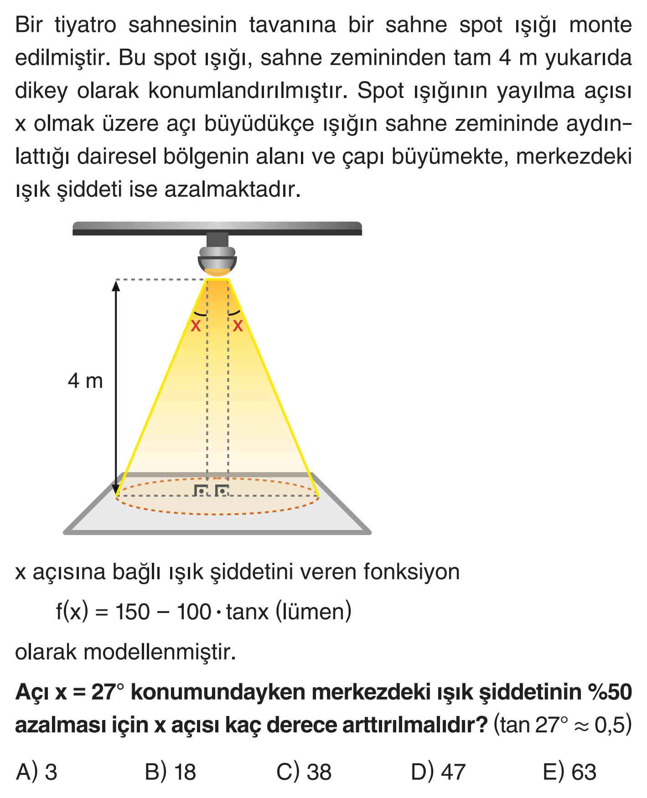
Çözüm
- $f(27^\circ) = 150 - 100\cdot0{,}5 = 100$ lümen.
- %50 azalınca 50: $150 - 100\tan x = 50$ → $\tan x = 1$ → $x = 45^\circ$.
- Artış $45^\circ - 27^\circ = 18^\circ$.
Cevap: B
Soru 20Cevap: B
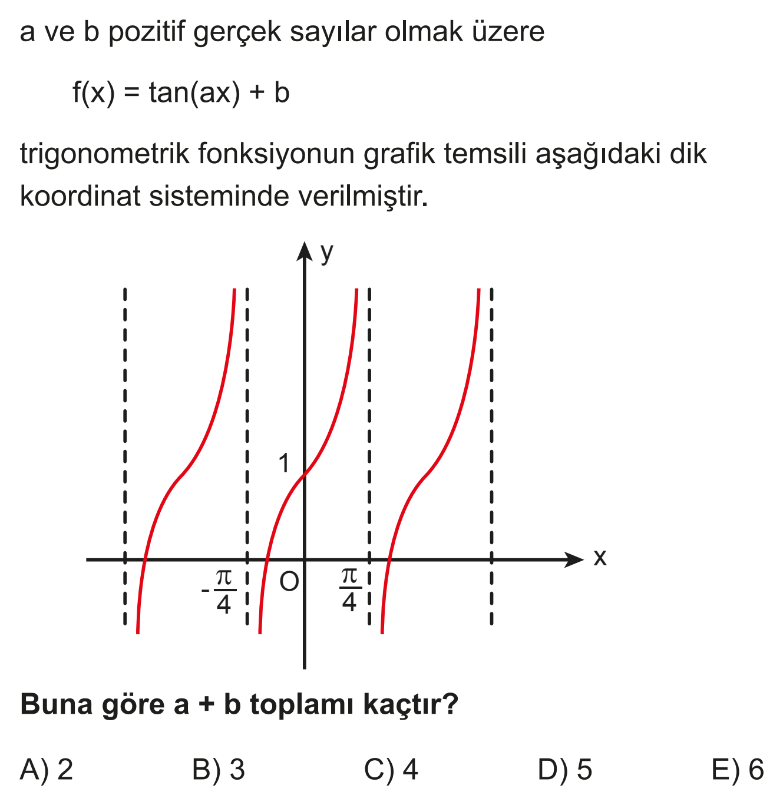
Çözüm
- $f(0) = \tan0 + b = 1$ → $b = 1$.
- Asimptotlar $\pm\frac{\pi}{4}$ → $\frac{\pi}{2a} = \frac{\pi}{4}$ → $a = 2$.
- $a + b = 3$.
Cevap: B